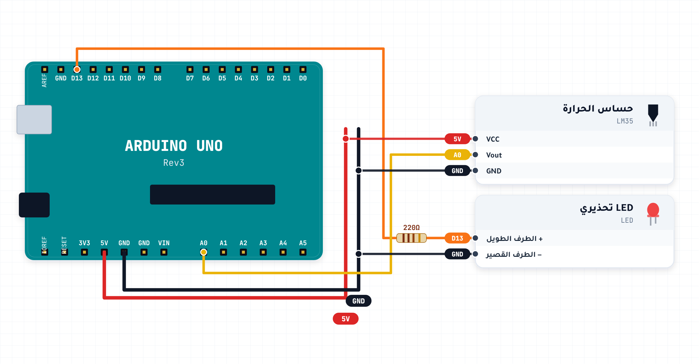
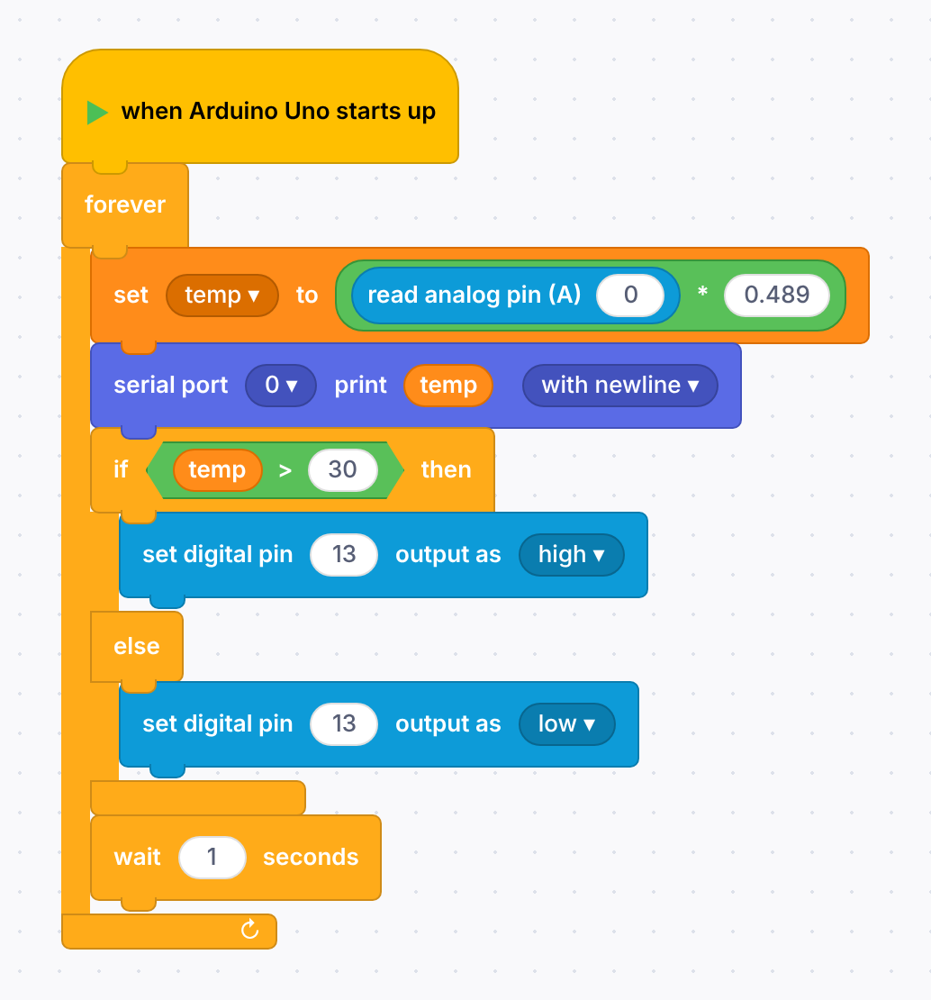

▶فيديو الشرح
نقرأ درجة الحرارة من حساس LM35 ونضيء LED تحذيرياً إذا تجاوزت 30°C.
1المكونات
ARDUINO UNOboardحساس الحرارةLM35LED تحذيريLEDأسلاك توصيلJumper Wiresلوحة تجاربBreadboard
2مخطط التوصيل

اضغط على المخطط لتكبيره · نسخة SVG عالية الدقة
| القطعة | الطرف | يوصل إلى |
|---|---|---|
| حساس الحرارة | VCC | 5V |
| حساس الحرارة | Vout | A0 |
| حساس الحرارة | GND | GND |
| LED تحذيري | + الطرف الطويل | D13 عبر مقاومة 220Ω |
| LED تحذيري | − الطرف القصير | GND |
3الكود
لا يحتاج هذا المشروع إلى أي مكتبة إضافية.
/* المشروع 7: محطة قياس درجة الحرارة (LM35) كتاب: 38 مشروع في شهر — لؤي النصري (@robotlouay) التوصيل (LM35 والوجه المسطح نحوك: من اليسار إلى اليمين): VCC → 5V Vout → A0 GND → GND LED تحذيري ← 220Ω ← Pin 13 (نسخة DHT11 في آخر الملف كتعليق) */ const int SENSOR_PIN = A0; const int LED_PIN = 13; const float LIMIT_C = 30.0; // حد التحذير بالدرجة المئوية void setup() { Serial.begin(9600); pinMode(LED_PIN, OUTPUT); } void loop() { // متوسط 10 قراءات لتقليل التشويش long sum = 0; for (int i = 0; i < 10; i++) { sum += analogRead(SENSOR_PIN); delay(5); } float voltage = (sum / 10.0) * (5.0 / 1023.0); float tempC = voltage * 100.0; // LM35: كل 10mV = 1°C Serial.print("Temperature: "); Serial.print(tempC, 1); Serial.println(" C"); digitalWrite(LED_PIN, tempC > LIMIT_C ? HIGH : LOW); delay(1000); } /* ---- نسخة DHT11 (ثبّت مكتبة "DHT sensor library" من Adafruit) ---- #include <DHT.h> DHT dht(2, DHT11); // دبوس البيانات → Pin 2 + مقاومة 10kΩ إلى 5V void setup(){ Serial.begin(9600); dht.begin(); pinMode(13, OUTPUT); } void loop(){ float t = dht.readTemperature(); float h = dht.readHumidity(); if (isnan(t)) { Serial.println("DHT error"); delay(2000); return; } Serial.print(t); Serial.print(" C "); Serial.print(h); Serial.println(" %"); digitalWrite(13, t > 30 ? HIGH : LOW); delay(2000); // DHT11 يحتاج ثانيتين بين القراءات } */
🧩 mBlock 5: اختر الجهاز Arduino Uno ثم وضع Upload، وأنشئ المتغيرات المستعملة من فئة Variables.
نفس منطق كود Arduino IDE مكتوباً بالبلوكات.
نفس منطق كود Arduino IDE مكتوباً بالبلوكات.


4كيف يعمل؟
- analogRead(A0) تقرأ جهد الحساس
- كل 10mV = 1 درجة مئوية
- الحرارة تُعرض في Serial Monitor
- فوق 30°C يضيء الـ LED
⚠ قبل توصيل الكهرباء: راجع كل سلك مع الجدول أعلاه، وتأكد من عدم وجود تماس بين 5V و GND. اختر اللوحة والمنفذ الصحيحين من قائمة Tools في Arduino IDE.